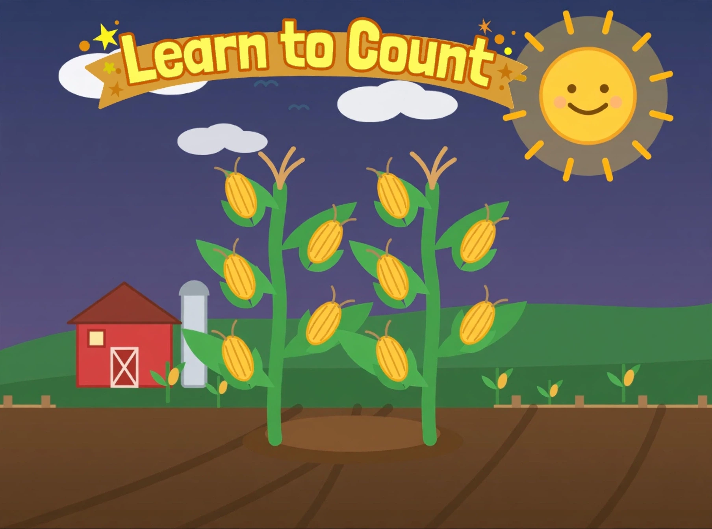

Plant the seed. Tap the big button and watch the seed drop into the soil.
Water it. Tap the watering can. Splash! A little sprout pops up.
Sunshine time. Tap the sun and the plant grows taller. Water and sun a little more, and golden corn appears!
Pick the corn. Tap each ear of corn and it jumps into the basket.
Count together. Tap “Count the Corn!” and a reminder pops up — make sure to count the ears of corn out loud. Tap its big button, then tap each ear in the basket and count out loud: one, two, three!
There are no timers and no way to lose — just grow at your own pace. The first round grows 1 ear of corn. Every time you tap Grow Again! the next round grows one more ear — 2, then 3, then 4, all the way up to 20 ears. The corn grows on stalks — never more than 5 ears on one stalk. Every 5 ears adds another stalk, so the biggest rounds grow on 4 stalks. The basket holds the picked ears in rows of at most 10. Finish Round 20 and a big flashing celebration fills the screen — you finished the whole game! Tap Back to Home Screen on it to return home, where you can start over or enter a round. When the game opens, the Learn to Count title picture appears first — tap its big Enter Game button to go to the home screen, then tap Start at the Beginning for Round 1, or type any round from 1 to 20 to start there. When counting starts, a reminder pops up: make sure to count the ears of corn out loud together!
Make sure to count the ears of corn out loud…
Tap each ear in the basket and say its number together — one, two, three!
You finished the whole game!
You grew all the way to Round 20 — twenty ears of corn!
What a great corn counter you are!

👶 Learn to Count
Start at the beginning, or type the round you want to start at.